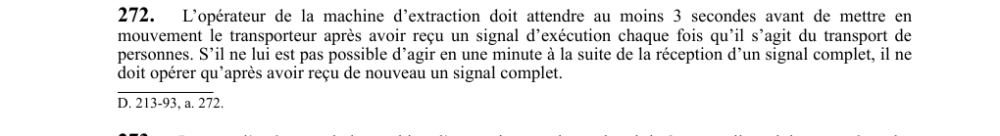

art-272-RSSM : délai signal exécution transport personnes
Un article du wiki ⚖️ Recueil législatif
En bref
L'opérateur doit attendre au moins 3 secondes après réception d'un signal d'exécution avant de mettre le transporteur en mouvement lors du transport de personnes ; s'il. Il s'agit d'une obligation.
- Suivant la réception du signal complet, il doit attendre un nouveau signal complet.
- Attente d'au moins 3 secondes après signal d'exécution pour transport de personnes.
- Si impossible d'agir dans la minute, attendre un nouveau signal complet.
🌐 LegisQuébec · 📄 PDF officiel
Texte officiel : capture du PDF

Toucher l'image pour l'agrandir🔗 Voir art. 272 RSSM dans le PDF (page 77)
Version : texte officiel du RSSM (RLRQ c. S-2.1, r. 14), à jour au 1er mai 2024 — Éditeur officiel du Québec
Voir aussi
- art. 270 : intervalles réguliers coups de signaux · obligation : les coups des signaux doivent être émis à des intervalles réguliers.
- art. 271 : ordre signaux transport personnes puits · obligation : lorsque des personnes sont montées ou descendues au moyen d'une machine d'extraction, les signaux doivent être émis dans l'ordre suivant : signal d'avertissement, signal de destination, puis signal d'exécution.
- art. 273 : signal trois coups appliquer freins · obligation : à la réception d'un signal de 3 coups, l'opérateur doit appliquer les freins de service et demeurer au poste de commande ; il ne peut quitter le poste que lors de travaux d'entretien ou d'un arrêt prolongé, à condition que l'alimentation en énergie motrice soit coupée.
- art. 274 : signal 5 coups opération permise · faculté : lorsque l'opérateur reçoit un signal de 5 coups, il peut effectuer toute opération avec le transporteur.
- ⚖️ Loi habilitante : LSST
- ↑ Index du bloc : Premiers secours et sauvetage
Pages qui pointent ici (5)
- art-270-RSSM : intervalles réguliers coups de signaux Recueil législatif
- art-271-RSSM : ordre signaux transport personnes puits Recueil législatif
- art-273-RSSM : signal trois coups appliquer freins Recueil législatif
- art-274-RSSM : signal 5 coups opération permise Recueil législatif
- RSSM : Premiers secours et sauvetage (art. 251 à 280) Recueil législatif